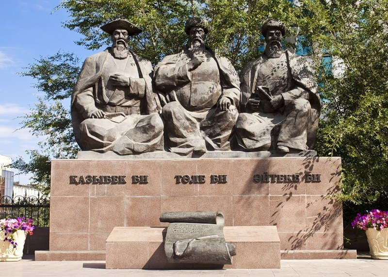

Төле би, Қазыбек би және Әйтеке биге арналған мүсіндік композиция. Үш би қазақ тарихында ел бірлігін сақтауымен, әділ билігімен және шешендік өнерімен танылған. Ескерткіш дәстүрлі дала даналығының маңызын еске салады.
Ақпарат көзі: visitastana.kz